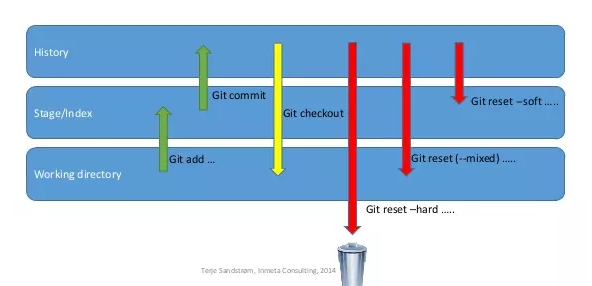

1、git clone –将远程项目下载到本地 进入目标文件夹，右击选择git bash here，执行如下命令
1 git clone git@git.soydai.cn:liuxuewen/static-file-3.0.git
或者
1 git clone http://git.soydai.cn/liuxuewen/static-file-3.0.git
区别：
第1种使用ssh协议下载，第二种使用http协议，而Git支持多种协议包括 ssh、http、https；
通过http、https协议下载时，需要输入 Username、Password 登录成功才会下载到本地；
通过ssh支持的原生git协议速度最快。
2、git add –将文件添加至缓存区 进入目标文件夹，右击选择git bash here，执行如下命令
1 git add www/js/a.js 添加具体未版本控制对象
3、git remote –远程主机设置 1 2 3 4 5 6 7 8 9 10 11 12 13 14 15 16 17 18 #列出现存远程主机 git remote #列出远程主机详情及地址 git remote -v #设置远程主机自定义名称及地址 git remote add yourName url 如 git remote add monkeygeek git@github.com:monkeygeek/Test.git #删除指定名称的远程主机信息 git remote remove yourName #重命名远程主机 git remote rename 原名字 新名字 #展示远程主机详细信息 git remote show 主机名
为了便于管理，Git要求每个远程主机都必须指定一个主机名。git remote命令就用于管理主机名。
4、设置别名 可以针对git默认命令进行别名设置，效果同使用元命令相同，例如：
1 $ git config --global alias.ph push
5、git commit –将缓存区文件提交至库 由工作区提交至缓存区
1 git commit -m '修改xxxbug' ------描述并提交到本地当前分支
6、git pull –取回远程分支的更新并于本地分支合并 1 git pull <远程主机名> <远程分支名>:<本地分支名> //相当于git fetch + git merge，拉取远程分支并merge。
1 git pull --rebase : 相当于git fetch + git rebase，拉取远程分支并进行rebase操作。
1 git pull origin xxx 直接拉取xxx分支代码到本地
7、git push –将本地分支的更新推送到远程分支 1 git push origin 本地分支 : 远程分支 //将本地缓存推送到远程分支
8、git merge 和 git rebase 的区别 1 git merge 被合并分支名称 (例如项目A合并项目B,则在项目A中执行git merge B)
举个例子：
A和B两个人进行合作开发，同时在develop分支上开启各自的功能分支featureA和featureB进行开发，A在10：00提交了A1，12:00提交了A2，16:00提交了A3，并且合并到develop分支，此时develop分支状态为：
而B则分别在9：00提交了B1，在11：00提交了B2，在17：00提交了B3，此时对于B来说，合并到develop分支有两种方式，使用rebase和merge。
1 2 3 4 // 根据提交的先后顺序进行排序 merge ： Head -> B1 -> A1 -> B2 -> A2 -> A3 -> B3 // 根据提交的先后进行排序 rebase： Head -> A1 -> A2 -> A3 -> B1 -> B2 -> B3
9、git branch –本地分支管理 列出本地已经存在的分支，并且在当前分支的前面加“*”号标记。
1 2 3 4 5 6 7 8 git branch :列出本地分支 git branch -r : 列出远程分支 git branch -a: 列出本地分支和远程分支 git branch <name>: 创建一个新的本地分支 git branch -m oldbranch newbranch： 重命名分支 git branch -d branchname： 删除本地分支 git push origin --delete branchname：删除远程分支 git push origin yourBranch 提交本地分支到远程
10、git remote –远程分支管理 列出已经存在的远程分支
1 git remote -v: 列出详细信息，在每一个名字后面列出其远程url
将远程仓库连接地址添加至本地某仓库，使之成为本地仓库的远程地址
1 git remote add <name> <url>：在url创建名字为name的仓库，name为远程仓库的名字。
11、git checkout –迁出分支、切换分支、迁出单个文件 1 2 3 git checkout -b 本地分支名 origin/远程分支名 //拉取远程分支并创建和切换到本地分支 git checkout 本地分支名 //切换本地分支 git checkout --patch 目标分支名 文件路径 //合并两个分支中单个的文件
12、git stash 和 git pop 在执行pull操作时会遇到提示即将覆盖文件，这个时候可以使用stash进行备份，之后再进行获取保存内容，git将自动进行合并
1 2 3 4 git stash：是备份当前的工作区的内容，从最近的一次提交中读取相关内容，让工作区保证和上次提交的内容一致。同时，将当前的工作区内容保存到Git栈中。 git stash pop：从Git栈中读取最近一次保存的内容，恢复工作区的相关内容。由于可能存在多个Stash的内容，所以用栈来管理，pop会从最近的一个stash中读取内容并恢复。 git stash list：显示Git栈内的所有备份，可以利用这个列表来决定从那个地方恢复。 git stash clear：清空Git栈。此时使用gitg等图形化工具会发现，原来stash的哪些节点都消失了。
13、tag –为分支添加标记 1 2 3 4 5 6 7 8 9 10 11 12 13 14 15 // 列出本地tag $ git tag // 添加tag $ git tag -a v0.1.2 -m “0.1.2版本” // 切换到tag的位置 $ git checkout -b [branch] [tagname] // 删除tag $ git tag -d [tagname] // 推tag $ git push origin –tags $ git push origin [tagname]
14、git config查看/修改用户名和地址 本地git的用户名和邮箱是作为身份标识，仅仅是标识。
1 2 git config user.name git config user.email
15、git fetch –取回远程分支但不与本地分支合并 1 2 git fetch //在服务端创建分支后本地通过git branch -a拉去远程分支发现没有最新创建的这时需要刷新本地分支 git fetch origin 远程分支名 : 本地分支名 //拉取远程分支到本地分支
16、git status –查看本地文件修改状态 查看需要提交的文件
17、git reset –用户版本库回退（改变HEAD指向） 
git –hard：将缓存区、工作区强制与分支仓库保持一直，换句话说，工作区、缓存区内容会被重置有丢失风险，这也是git稍有的危险命令。如git reset –hard HEAD^ 回退到上一次commit，当然也可以指定commit版本
git –soft：保留工作区并把重置带来的差异放进暂存区，此命令将造成工作区与分支存在差异，使工作区文件为修改状态。缓存区与分支保持一直。
git –mixed：将分支内容、缓存区内容、工作区内容共同融合保存到工作区，并清空缓存区，此时缓存区与工作区存在不一致。
18、git config –git配置相关 1 2 3 4 5 6 7 8 9 10 11 12 13 14 15 16 17 18 19 20 21 22 23 24 25 26 27 #分别查看系统\全局\本地配置,优先级为local>global>system git config --system -l git config --global -l git config --local -l #设置全局用户名\用户邮箱 git config --global user.name "yourName" git config --global user.email "yourEmail" #设置项目本地用户名\用户邮箱 git config --local user.name "yourName" git config --local user.email "yourEmail" #缓存项目本地的rsa对应的凭据信息 #1.缓存的账户密码以明文形式存放在.ssh根目录.git-credentials文件内 #2.同服务器账户只能被缓存一次，如account1和account2同为github账户，即github.com的服务器地址只能被缓存一条数据 #3.若account2被缓存那么在account1使用push等命令时会提示“使用account2账户登录无权限” git config --local credential.helper store #清除系统\全局\项目本地的rsa对应的凭据信息 git config --system --unset credential.helper git config --global --unset credential.helper git config --local --unset credential.helper #清除全局用户名\用户邮箱信息 git config --global --unset user.name git config --global --unset user.email
19、ssh -T –验证git是否联通 1 2 #基本格式为 ssh -T 远程服务类型@远程地址(当然也可以是自定义地址Host) ssh -T git@github.com
1 2 3 4 5 6 7 8 9 10 11 #步骤一:在.ssh文件夹内的config配置文件来配置自定义rsa,如下 Host yqnshare User yqnshareTest Hostname github.com IdentityFile ~/.ssh/yqnshare_rsa #通过自定义Host名称来代替远程地址进行访问 $ ssh -T git@yqnshare Enter passphrase for key '/c/Users/EDZ/.ssh/yqnshare_rsa': Hi yqnshare! You've successfully authenticated, but GitHub does not provide shell access.
用于本地测试是否能够联通远程服务器,出现以下内容则表示联通:
1 Hi ***! You've successfully authenticated, but GitHub does not provide shell access.
20、ssh-add –私钥添加至本地 1 2 3 4 5 6 7 8 9 10 11 #将不同的私钥添加到本机git环境 ssh-add ~/.ssh/id_rsa_github // 将 GitHub 私钥添加到本地 ssh-add ~/.ssh/id_rsa_gitlab // 将 GitLab 私钥添加到本地 #列出本机git环境已添加私钥情况 ssh-add -l #如果执行添加私钥命令出现如下提示,则需要执行eval `ssh-agent`命令 Could not open a connection to your authentication agent eval `ssh-agent`
版权声明：本文为博主原创文章，欢迎转载，转载请注明作者、原文超链接，感谢各位看官!!!
本文出自： monkeyGeek
座右铭： 生于忧患，死于安乐
欢迎志同道合的朋友一起交流、探讨！
monkeyGeek


 monkeyGeek
monkeyGeek